R을 사용하기 위해서는 R을 설치해야 합니다.
'설치1'에서는 R을 설치하겠습니다.
R 공식 홈페이지(https://www.r-project.org/)에 접속합니다.
왼쪽 메뉴 중 'Download'의 'CRAN'을 클릭합니다.
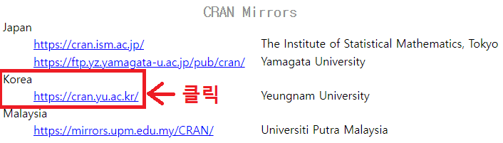'CRAN Mirrors' 페이지에서 스크롤을 내려 'Korea'의 'http://cran.yu.ac.kr/'을 클릭합니다(달라질 수 있음).
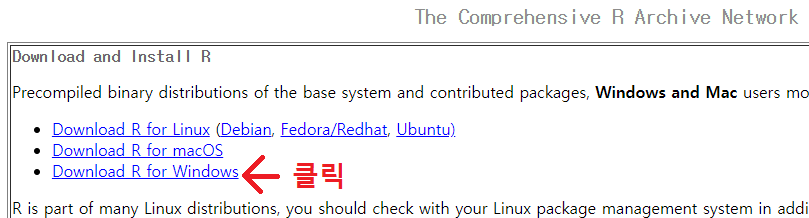'The Comprehensive R Archive Network' 페이지에서 'Download R for Windows'를 클릭합니다.
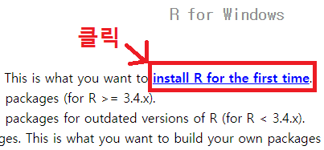'R for Windows' 페이지에서 'install R for the first time'을 클릭합니다.
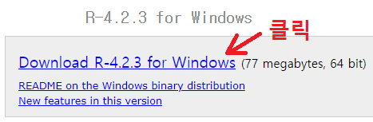'R-x.x.x for Windows' 페이지에서 'Download R-x.x.x for Windows'를 클릭합니다.
다운로드가 완료되면 브라우저에 나타난 파일 이름을 클릭하거나 파일 탐색기의 Downloads 폴더에서 해당 파일을 실행합니다.
그러면 '사용자 계정 컨트롤' 창이 나타납니다.
'이 앱이 디바이스를 변경할 수 있도록 허용하시겠어요?' 라고 나오는데 '예'를 클릭합니다.
'설치 언어 선택' 창이 나타나면 '한국어'를 확인하고 '확인' 버튼을 클릭합니다.
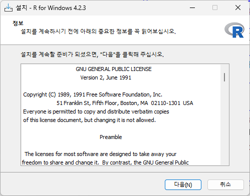'설치 - R for Windows x.x.x - 정보' 창이 나타나면 정보를 읽고 '다음(N)' 버튼을 클릭합니다.
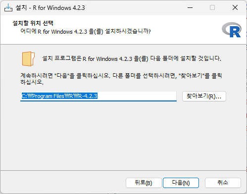기본값 또는 원하는 설치 위치를 선택하고 '다음(N)' 버튼을 클릭합니다.
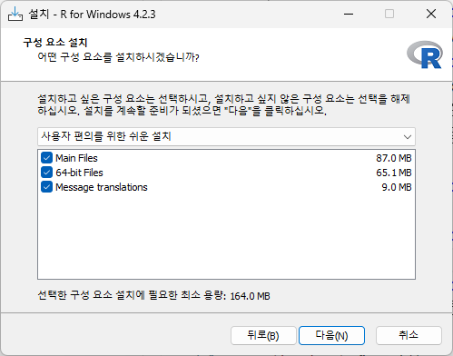구성 요소를 확인하고 '다음(N)' 버튼을 클릭합니다.
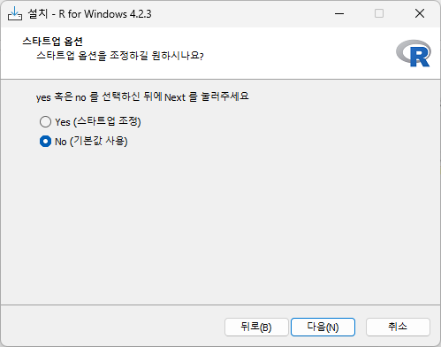스타트업 옵션을 확인하고 '다음(N)' 버튼을 클릭합니다.
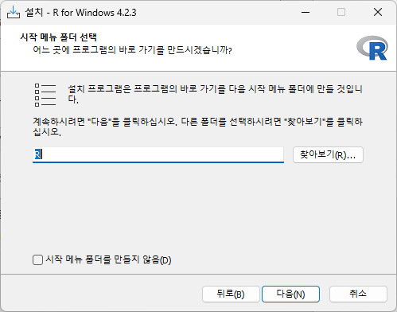시작 메뉴 폴더 선택을 확인하고 '다음(N)' 버튼을 클릭합니다.
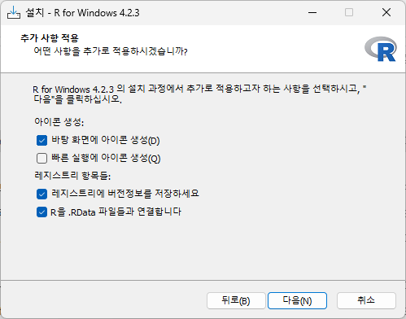추가 사항 적용을 확인하고 '다음(N)' 버튼을 클릭합니다.
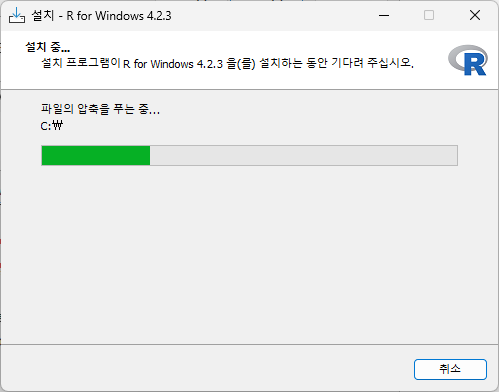설치가 완료되었습니다.
'완료(F)' 버튼을 클릭합니다.